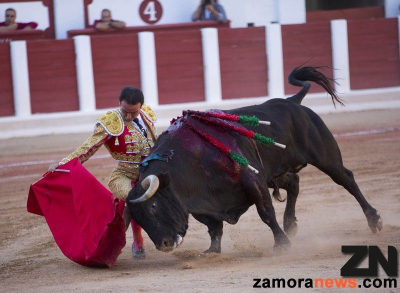

ZAMORA
LOCALIZACIÓN

Fuente: Wikipedia: Zamora
LOCALIDADES PRINCIPALES
- Zamora
- Benavente
- Toro
- Morales del Vino
- Villaralbo
- Moraleja del Vino
- Fuentesaúco
- Villalpando
- San Cristóbal de Entreviñas
- Puebla de Sanabria
GEOGRAFÍA
La provincia de Zamora cuenta con una superficie de 10 561 km² y limita al norte y sur con las provincias de León y Salamanca respectivamente, al este con la de Valladolid y al oeste con la provincia gallega de Orense y con el distrito portugués de Braganza.
Comprendida en la submeseta norte, su territorio presenta numerosos contrastes. Destaca una zona montañosa al noroeste, ocupada por parte de los montes de León, con alturas que llegan a los 2127 m (Peña Trevinca). En la zona occidental de la provincia, la sierra de la Culebra registra alturas de hasta 1241 m (Peña Mira) y acoge en su seno la reserva regional de caza de su mismo nombre, con importantes poblaciones de lobo ibérico (las más significativas de la península), ciervos y jabalíes, entre otros. Al suroeste de la provincia el río Duero discurre encajonado en una garganta denominada los Arribes del Duero con desniveles de hasta 300 m, constituyendo una frontera natural con Portugal. La zona centro, este y sur presenta la típica llanura meseteña, con excepción de los parajes-miradores de Peñausende, denominados Teso Santo16 y "El Castillo", ambos cercanos a los 1000 m de altura sobre el nivel del mar.
Su altura mínima se registra al suroeste del municipio de Fermoselle sobre los 330 m y su altura máxima en Peña Trevinca 2127 m en el municipio sanabrés de Porto.
HISTORIA
La historia de la provincia de Zamora es una parte de la historia de España que se localiza en el área geográfica aproximada de la actual provincia de Zamora. Hubo historiadores y estudiosos relevantes de la historia de la provincia, algunos de ellos fueron el fraile medieval Juan Gil de Zamora, y uno de los más renombrados que del siglo XVI: Florián de Ocampo (que en la actualidad posee un Instituto de Estudios Zamoranos homónimo), y los historiadores de la provincia: Cesáreo Fernández Duro, Antonio Piñuela Ximénez y Ursicinio Álvarez.17 Todos ellos fueron estudiosos especializados que pusieron la semilla de los historiadores que posteriormente aparecieron en el siglo XX. En 1989 se celebra el Primer Congreso de Historia de Zamora con ediciones posteriores. La provincia ha tenido desde sus inicios tres ciudades históricamente importantes: Zamora, Toro, Benavente. En torno a ellas existen otros núcleos poblacionales con protagonismo y presencia en diferentes instantes de su historia.
La provincia de Zamora, por su especial orografía, es lugar de paso entre la Meseta Central y los territorios del norte. Su asiento geográfico se encuentra ubicado en el noroeste de la península ibérica y presenta llanuras así como terreno montañoso, la frontera entre ambas se encuentran delimitadas por el cauce del río Esla (segundo río en la provincia en caudal, tras el Duero).18 Esta geografía ha permitido que gran parte de la provincia fuese "lugar de tránsito" para los distintos ejércitos entre Castilla, León, Galicia y Portugal. Es por lo que algunas de sus ciudades eran convertidas en baluartes defensivos. Parte de su historia guerrera se encuentra reflejada en su propio escudo denominada también "Seña Bermeja". El transcurso de la historia ha dejado muestras arquitectónicas del románico español, así como de modernismo. Coincidiendo con dos periodos de esplendor en la provincia.
Parte de la historia de la provincia de Zamora se encuentra narrada en forma de cantares como el Cantar de Sancho II y los de Gesta en su lucha con los reinos musulmanes del Al-Ándalus. Algunos de ellos cuentan hechos relevantes como el cerco de la ciudad de Zamora.1920 El origen etimológico de la denominación Zamora ha dado lugar a diversas teorías, desde el posible origen vacceo del Ocellum Duri hasta el Samurah árabe, múltiples denominaciones y explicaciones a su origen se han dado. La provincia aparece oficialmente en el censo de Floridablanca (1789) y queda configurada tal y como se conoce en la actualidad el 30 de noviembre de 1833, adscrita a la Región Leonesa (junto con las provincias de Salamanca y León). En 1983 se constituye la comunidad autónoma española de Castilla y León y la provincia se incluye en ella, junto con otras ocho provincias españolas.
A lo largo de la historia se produjeron diversos despoblados debido a la migración causada por las guerras, quedando desértica en sus ciudades. El esplendor económico y artístico de la provincia comienza en el siglo XI, justo cuando la población se ve incrementada en sus ciudades más importantes, aumenta el número de iglesias, y se edifica la que será la primera catedral del Reino de León. Se establecen las instituciones religiosas y civiles. Nacen las tradiciones religiosas de la Semana Santa, y muchas de las costumbres de los pueblos rurales de la provincia se van afianzando. El declive se inicia tras la muerte de los Reyes Católicos, y se va acentuado lentamente tras la Guerra de la Independencia, y posteriormente debido a la adaptación de la revolución industrial, poco a poco va sufriendo la región un despoblamiento de sus áreas rurales hacia las capitales. El fenómeno migratorio a otros países fue importante en el área de la provincia durante mediados del siglo XX. Desde 1900 hasta 1986 disminuyó prácticamente una quinta parte de sus habitantes. La llegada del siglo XXI se inicia un concepto de renovación que puede verse en una mejora de las infraestructuras, convirtiéndose la provincia en un área de conservación de la naturaleza y del patrimonio histórico, en el que se pueden disfrutar de parques naturales, de turismo rural y de áreas culturales. Se reactivan industrias tradicionales como la vitivinícola y la de producción de queso.
Cercano ya el bicentenario de la conformación de la provincia de Zamora, sus fronteras siguen aún en litigio en un pequeño territorio limítrofe con la provincia de Orense y Portugal. Se trata de un espacio del que dependen cuatro fronteras: la intermunicipal entre Hermisende y La Mezquita, la interprovincial entre Orense y Zamora, la intercomunitaria entre Galicia y Castilla y León e incluso la internacional entre España y Portugal. Este paraje, de poco más 1,8 km, se encuentra situado entre el cerro de Las Lagunas y la frontera con Portugal. La línea de delimitación entre las provincias de Orense y Zamora la realizan los mojones 349 y 350 que, a pesar de su existencia, no son reconocidos por el ayuntamiento de La Mezquita. Además, la pertenencia de este territorio a la provincia de Zamora se encuentra documentada en un plano topográfico que data de principios del siglo XX y que fue realizado por el Instituto Geográfico Nacional.
CULTURA
La provincia de Zamora cuenta con 144 Bienes de Interés Cultural (BIC) de los 2293 que existen en Castilla y León, una cifra importante, pero relativamente pequeña en la comparación interprovincial de su comunidad. De las nueve provincias, la de Zamora es una de las que menos menos bienes aporta, situándose muy por debajo de Burgos que cuenta con 436 bienes.55 El número de BIC de Zamora no se corresponde con su potencial histórico, artístico o arquitectónico, por lo que el catálogo existente en esta provincia está muy condicionado por las actuaciones de las distintas comisiones de Patrimonio que se han sucedido a lo largo de los años. Hay que tener en cuenta que la declaración BIC es una marca de calidad que pone en valor el patrimonio de una localidad o territorio y que su promoción atrae el turismo como fuente que genera riqueza y empleo.
No obstante, cabe destacar que de los 144 bienes, dos pertenecen a la categoría inmaterial, constituyendo una de las provincias, junto con Valladolid, que mayor reconocimientos de este tipo ostenta. Así, desde abril de 2014, la Semana Santa de Bercianos de Aliste recibió esta condecoración al constituir “una relevante y singular manifestación cultural con orígenes en el siglo XVI, que se ha mantenido inalterada hasta nuestros días, transmitiéndose de padres a hijos como un patrimonio vivo y seña de identidad de toda una comunidad”. Por otro lado, desde abril de 2015, la ‘Pasión zamorana: ritos, esencia y territorio” de Zamora también fue declarada Bien de Interés Cultural inmaterial siendo justificada del siguiente modo: “El conjunto histórico de la Ciudad de Zamora se convierte en elemento inherente a esta expresión cultural, en escenario y marco singular para esta representación, que no podría comprenderse sin el urbanismo y arquitectura de la ciudad. La estética de la Pasión Zamorana encuentra en la arquitectura de la ciudad el escenario idóneo para su puesta en escena. El trazado urbano de Zamora, con sus calles y plazas, sus construcciones históricas y el conjunto de iglesias románicas que conserva, conforman el decorado perfecto para esta representación, en la que los propios habitantes de la ciudad, junto con los visitantes, son los espectadores, actores y figurantes en este singular y relevante hecho cultural. Los recorridos, los lugares de culto o el Museo de Semana Santa, son el contexto espacial en el que se desarrolla la Pasión Zamorana, en el que se incardina la esencia, el espíritu y religiosidad de sus gentes, clave para la lectura e interpretación de la celebración”.
NATURALEZA
En la provincia de Zamora, se encuentran los parques naturales del Lago de Sanabria y alrededores y de Arribes del Duero y la reserva natural de las Lagunas de Villafáfila, así como la reserva de la biosfera de la Meseta Ibérica, compartida con Salamanca y Portugal. Además existen zonas protegidas o con régimen especial de caza en las sierras de la Culebra y de la Cabrera.
TRADICIONES
La cultura popular de la provincia de Zamora se manifiesta en una variada muestra de fiestas y costumbres, todas ellas generalmente ligadas a su gastronomía tradicional.
El año comienza con las "máscaras y disfraces", festividad de origen ancestral, en las que participan personajes grotescos, ataviados con vestidos estrafalarios de colores, que corren por las calles saltando, persiguiendo o haciendo bromas a las gentes y repitiendo una antigua tradición. Son los denominados Carochos, Tafarrón, Vaca Bayona o Zangarrón, según la denominación al uso de cada pueblo.
Numerosas son las tradicionales romerías, que principalmente se suelen concentrar en la primavera y otoño. Entre ellas destacan las de "La Luz" en Moveros (celebrada el último domingo de abril en una ermita ubicada en la línea fronteriza entre España y Portugal), la de "Los Pendones" de Fariza (celebrada el primer domingo de junio en plenos Arribes del Duero), la de "Donado" (el primer domingo de septiembre), la de "La Alcobilla" en Rábano (8 de septiembre), la de "La Tuiza" en Lubián (último domingo de septiembre) o la de "Los Remedios" en Otero de Sanabria (primer domingo de octubre).
Muchas localidades acompañan sus fiestas tradicionales con afamados festejos taurinos. Entre ellos destacan "el toro enmaromado" de Benavente (la víspera del Corpus), "los espantes de toros" de Fuentesaúco (primer fin de semana de julio), las corridas de toros de San Pedro de ciudad de Zamora (29 de junio) o los "encierros" de Villalpando o Fermoselle.
Destaca la "Semana Santa zamorana", declarada Fiesta de Interés Turístico Internacional. Es considerada como una de las más notables de España por su singularidad, austeridad, expresividad y religiosidad. Su origen se remonta al siglo XIV y con el paso de los años se ha convertido en la fiesta mayor de la ciudad. Destaca por la puesta en escena de sus desfiles procesionales, con una notable participación popular y la belleza de los recorridos por las calles del casco urbano antiguo.47 De notable interés es también la Semana Santa de Bercianos de Aliste, caracterizada por su sobriedad y emotividad, en especialmente el viernes santo por la tarde, cuando los vecinos de esta localidad se congregan junto a la iglesia para desclavar un crucificado y llevarlo en procesión entonando un popular miserere, y ataviados con túnicas y caperuz blanco que serán su mortaja, y también con la tradicional capa alistana.
Fuente: Zamora News